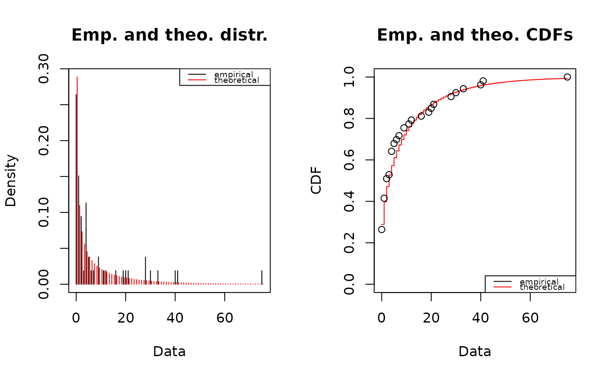
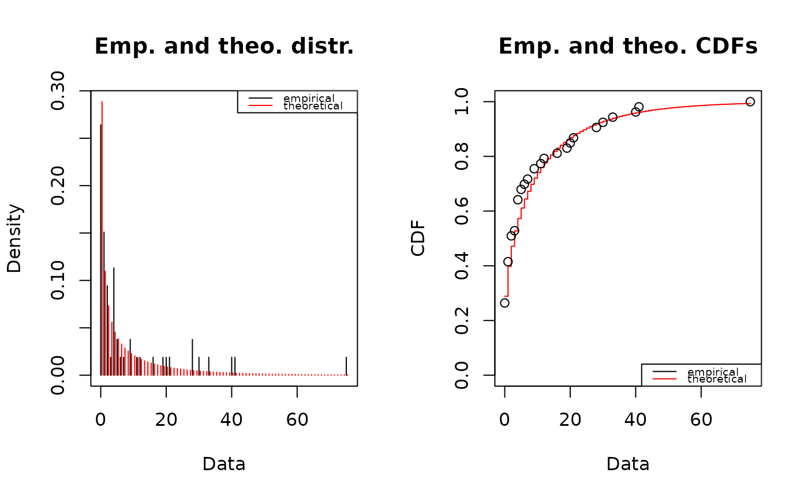

Goodness-of-fit statistics
gofstat.RdComputes goodness-of-fit statistics for parametric distributions fitted to a same non-censored data set.
Usage
gofstat(f, chisqbreaks, meancount, discrete, fitnames=NULL)
# S3 method for gofstat.fitdist
print(x, ...)Arguments
- f
An object of class
"fitdist", output of the functionfitdist, or a list of"fitdist"objects.- chisqbreaks
A numeric vector defining the breaks of the cells used to compute the chi-squared statistic. If omitted, these breaks are automatically computed from the data in order to reach roughly the same number of observations per cell, roughly equal to the argument
meancount, or sligthly more if there are some ties.- meancount
The mean number of observations per cell expected for the definition of the breaks of the cells used to compute the chi-squared statistic. This argument will not be taken into account if the breaks are directly defined in the argument
chisqbreaks. Ifchisqbreaksandmeancountare both omitted,meancountis fixed in order to obtain roughly \((4n)^{2/5}\) cells with \(n\) the length of the dataset.- discrete
If
TRUE, only the Chi-squared statistic and information criteria are computed. If missing,discreteis passed from the first object of class"fitdist"of the listf.- fitnames
A vector defining the names of the fits.
- x
An object of class
"fitdist".- ...
Further arguments to be passed to generic functions.
Details
Goodness-of-fit statistics are computed. The Chi-squared statistic is computed using cells defined
by the argument
chisqbreaks or cells automatically defined from data, in order
to reach roughly the same number of observations per cell, roughly equal to the argument
meancount, or sligthly more if there are some ties.
The choice to define cells from the empirical distribution (data), and not from the
theoretical distribution, was done to enable the comparison of Chi-squared values obtained
with different distributions fitted on a same data set.
If chisqbreaks and meancount
are both omitted, meancount is fixed in order to obtain roughly \((4n)^{2/5}\) cells,
with \(n\) the length of the data set (Vose, 2000).
The Chi-squared statistic is not computed if the program fails
to define enough cells due to a too small dataset. When the Chi-squared statistic is computed,
and if the degree of freedom (nb of cells - nb of parameters - 1) of the corresponding distribution
is strictly positive, the p-value of the Chi-squared test is returned.
For continuous distributions, Kolmogorov-Smirnov, Cramer-von Mises and Anderson-Darling and statistics are also computed, as defined by Stephens (1986).
An approximate Kolmogorov-Smirnov test is performed by assuming the distribution parameters known. The critical value defined by Stephens (1986) for a completely specified distribution is used to reject or not the distribution at the significance level 0.05. Because of this approximation, the result of the test (decision of rejection of the distribution or not) is returned only for data sets with more than 30 observations. Note that this approximate test may be too conservative.
For data sets with more than 5 observations and for distributions for
which the test is described by Stephens (1986) for maximum likelihood estimations
("exp", "cauchy", "gamma" and "weibull"),
the Cramer-von Mises and Anderson-darling tests are performed as described by Stephens (1986).
Those tests take into
account the fact that the parameters are not known but estimated from the data by maximum likelihood.
The result is the
decision to reject or not the distribution at the significance level 0.05. Those tests are available
only for maximum likelihood estimations.
Only recommended statistics are automatically printed, i.e.
Cramer-von Mises, Anderson-Darling and Kolmogorov statistics for continuous distributions and
Chi-squared statistics for discrete ones ( "binom",
"nbinom", "geom", "hyper" and "pois" ).
Results of the tests are not printed but stored in the output of the function.
Value
gof.stat returns an object of class "gofstat.fitdist" with following components,
- chisq
a named vector with the Chi-squared statistics or
NULLif not computed- chisqbreaks
common breaks used to define cells in the Chi-squared statistic
- chisqpvalue
a named vector with the p-values of the Chi-squared statistic or
NULLif not computed- chisqdf
a named vector with the degrees of freedom of the Chi-squared distribution or
NULLif not computed- chisqtable
a table with observed and theoretical counts used for the Chi-squared calculations
- cvm
a named vector of the Cramer-von Mises statistics or
"not computed"if not computed- cvmtest
a named vector of the decisions of the Cramer-von Mises test or
"not computed"if not computed- ad
a named vector with the Anderson-Darling statistics or
"not computed"if not computed- adtest
a named vector with the decisions of the Anderson-Darling test or
"not computed"if not computed- ks
a named vector with the Kolmogorov-Smirnov statistic or
"not computed"if not computed- kstest
a named vector with the decisions of the Kolmogorov-Smirnov test or
"not computed"if not computed- aic
a named vector with the values of the Akaike's Information Criterion.
- bic
a named vector with the values of the Bayesian Information Criterion.
- discrete
the input argument or the automatic definition by the function from the first object of class
"fitdist"of the list in input.- nbfit
Number of fits in argument.
References
Cullen AC and Frey HC (1999), Probabilistic techniques in exposure assessment. Plenum Press, USA, pp. 81-155.
Stephens MA (1986), Tests based on edf statistics. In Goodness-of-fit techniques (D'Agostino RB and Stephens MA, eds), Marcel Dekker, New York, pp. 97-194.
Venables WN and Ripley BD (2002), Modern applied statistics with S. Springer, New York, pp. 435-446.
Vose D (2000), Risk analysis, a quantitative guide. John Wiley & Sons Ltd, Chischester, England, pp. 99-143.
Delignette-Muller ML and Dutang C (2015), fitdistrplus: An R Package for Fitting Distributions. Journal of Statistical Software, 64(4), 1-34.
Examples
# (1) fit of two distributions to the serving size data
# by maximum likelihood estimation
# and comparison of goodness-of-fit statistics
#
data(groundbeef)
serving <- groundbeef$serving
(fitg <- fitdist(serving, "gamma"))
#> Fitting of the distribution ' gamma ' by maximum likelihood
#> Parameters:
#> estimate Std. Error
#> shape 4.00825257 0.341336046
#> rate 0.05441911 0.004935468
gofstat(fitg)
#> Goodness-of-fit statistics
#> 1-mle-gamma
#> Kolmogorov-Smirnov statistic 0.1281246
#> Cramer-von Mises statistic 0.6934112
#> Anderson-Darling statistic 3.5660192
#>
#> Goodness-of-fit criteria
#> 1-mle-gamma
#> Akaike's Information Criterion 2511.250
#> Bayesian Information Criterion 2518.325
(fitln <- fitdist(serving, "lnorm"))
#> Fitting of the distribution ' lnorm ' by maximum likelihood
#> Parameters:
#> estimate Std. Error
#> meanlog 4.1693701 0.03366988
#> sdlog 0.5366095 0.02380783
gofstat(fitln)
#> Goodness-of-fit statistics
#> 1-mle-lnorm
#> Kolmogorov-Smirnov statistic 0.1493090
#> Cramer-von Mises statistic 0.8277358
#> Anderson-Darling statistic 4.5436542
#>
#> Goodness-of-fit criteria
#> 1-mle-lnorm
#> Akaike's Information Criterion 2526.639
#> Bayesian Information Criterion 2533.713
gofstat(list(fitg, fitln))
#> Goodness-of-fit statistics
#> 1-mle-gamma 2-mle-lnorm
#> Kolmogorov-Smirnov statistic 0.1281246 0.1493090
#> Cramer-von Mises statistic 0.6934112 0.8277358
#> Anderson-Darling statistic 3.5660192 4.5436542
#>
#> Goodness-of-fit criteria
#> 1-mle-gamma 2-mle-lnorm
#> Akaike's Information Criterion 2511.250 2526.639
#> Bayesian Information Criterion 2518.325 2533.713
# (2) fit of two discrete distributions to toxocara data
# and comparison of goodness-of-fit statistics
#
data(toxocara)
number <- toxocara$number
fitp <- fitdist(number,"pois")
summary(fitp)
#> Fitting of the distribution ' pois ' by maximum likelihood
#> Parameters :
#> estimate Std. Error
#> lambda 8.679245 0.4046719
#> Loglikelihood: -507.5334 AIC: 1017.067 BIC: 1019.037
plot(fitp)
 fitnb <- fitdist(number,"nbinom")
summary(fitnb)
#> Fitting of the distribution ' nbinom ' by maximum likelihood
#> Parameters :
#> estimate Std. Error
#> size 0.3971457 0.08289027
#> mu 8.6802520 1.93501003
#> Loglikelihood: -159.3441 AIC: 322.6882 BIC: 326.6288
#> Correlation matrix:
#> size mu
#> size 1.0000000000 -0.0001038553
#> mu -0.0001038553 1.0000000000
#>
plot(fitnb)

gofstat(list(fitp, fitnb),fitnames = c("Poisson","negbin"))
#> Chi-squared statistic: 31256.96 7.48606
#> Degree of freedom of the Chi-squared distribution: 5 4
#> Chi-squared p-value: 0 0.1123255
#> the p-value may be wrong with some theoretical counts < 5
#> Chi-squared table:
#> obscounts theo Poisson theo negbin
#> <= 0 14 0.009014207 15.295027
#> <= 1 8 0.078236512 5.808596
#> <= 3 6 1.321767215 6.845015
#> <= 4 6 2.131297776 2.407815
#> <= 9 6 29.827829221 7.835196
#> <= 21 6 19.626223732 8.271110
#> > 21 7 0.005631339 6.537242
#>
#> Goodness-of-fit criteria
#> Poisson negbin
#> Akaike's Information Criterion 1017.067 322.6882
#> Bayesian Information Criterion 1019.037 326.6288
# (3) Use of Chi-squared results in addition to
# recommended statistics for continuous distributions
#
set.seed(1234)
x4 <- rweibull(n=1000,shape=2,scale=1)
# fit of the good distribution
f4 <- fitdist(x4,"weibull")
# fit of a bad distribution
f4b <- fitdist(x4,"cauchy")
gofstat(list(f4,f4b),fitnames=c("Weibull", "Cauchy"))
#> Goodness-of-fit statistics
#> Weibull Cauchy
#> Kolmogorov-Smirnov statistic 0.02129364 0.114565
#> Cramer-von Mises statistic 0.06261917 1.854791
#> Anderson-Darling statistic 0.43120643 17.929123
#>
#> Goodness-of-fit criteria
#> Weibull Cauchy
#> Akaike's Information Criterion 1225.734 1679.028
#> Bayesian Information Criterion 1235.549 1688.843
fitnb <- fitdist(number,"nbinom")
summary(fitnb)
#> Fitting of the distribution ' nbinom ' by maximum likelihood
#> Parameters :
#> estimate Std. Error
#> size 0.3971457 0.08289027
#> mu 8.6802520 1.93501003
#> Loglikelihood: -159.3441 AIC: 322.6882 BIC: 326.6288
#> Correlation matrix:
#> size mu
#> size 1.0000000000 -0.0001038553
#> mu -0.0001038553 1.0000000000
#>
plot(fitnb)

gofstat(list(fitp, fitnb),fitnames = c("Poisson","negbin"))
#> Chi-squared statistic: 31256.96 7.48606
#> Degree of freedom of the Chi-squared distribution: 5 4
#> Chi-squared p-value: 0 0.1123255
#> the p-value may be wrong with some theoretical counts < 5
#> Chi-squared table:
#> obscounts theo Poisson theo negbin
#> <= 0 14 0.009014207 15.295027
#> <= 1 8 0.078236512 5.808596
#> <= 3 6 1.321767215 6.845015
#> <= 4 6 2.131297776 2.407815
#> <= 9 6 29.827829221 7.835196
#> <= 21 6 19.626223732 8.271110
#> > 21 7 0.005631339 6.537242
#>
#> Goodness-of-fit criteria
#> Poisson negbin
#> Akaike's Information Criterion 1017.067 322.6882
#> Bayesian Information Criterion 1019.037 326.6288
# (3) Use of Chi-squared results in addition to
# recommended statistics for continuous distributions
#
set.seed(1234)
x4 <- rweibull(n=1000,shape=2,scale=1)
# fit of the good distribution
f4 <- fitdist(x4,"weibull")
# fit of a bad distribution
f4b <- fitdist(x4,"cauchy")
gofstat(list(f4,f4b),fitnames=c("Weibull", "Cauchy"))
#> Goodness-of-fit statistics
#> Weibull Cauchy
#> Kolmogorov-Smirnov statistic 0.02129364 0.114565
#> Cramer-von Mises statistic 0.06261917 1.854791
#> Anderson-Darling statistic 0.43120643 17.929123
#>
#> Goodness-of-fit criteria
#> Weibull Cauchy
#> Akaike's Information Criterion 1225.734 1679.028
#> Bayesian Information Criterion 1235.549 1688.843